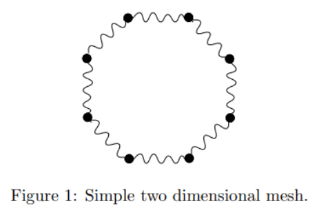
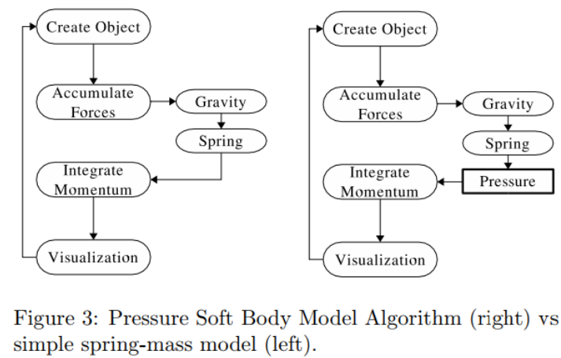
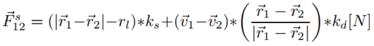
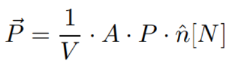
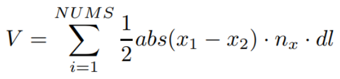

The above demo is an implementation of Pressure Soft Body Model by Maciej Matyka. The motivation behind this project is real-time soft body simulation in games.
The Pressure Soft Body model consists of material points (MP). Adjacent MP are connected by linear springs. Simulation of such a simple spring-mass (SM) model in a gravity field would just collapse the object.
Hence, we add a pressure force that allows deformation of the object but an energy minimum will be there where the body looks like the initial shape.

The mass points and the springs connecting them are stored in two arrays. The number of springs is one more than the number of points.
The point data structure contains three vectors: position, velocity and force. The accumulated forces are stored in the force vector to be used for next integration step to find the velocity and position.
The spring data structure stores the point indices of its endpoints, the rest length of the spring, and the normal vector to the spring.
The algorithm is simple. At each step, we apply external gravity force, and two internal forces, spring force and pressure force. We then integrate the momentum to find the position of the points.

The spring force is calculated using Hooke's law as per the following equation:

where,
The pressure force is calculated as per the following equation:

where,
We use Gauss theorem to approximate the volume of the body:

where,
For numerical integration, Heun’s predictor/corrector semi-implicit scheme is used.
Here is a video of the soft ball bouncing around with default parameters:
If we increase the pressure, the ball inflates like a balloon to occupy the whole space and eventually blows up (the spring simulation blows up):
If we reduce the pressure to minimum, increase the mass a bit, and reduce the spring constant, the ball deflates and looks like goo when we move it around: